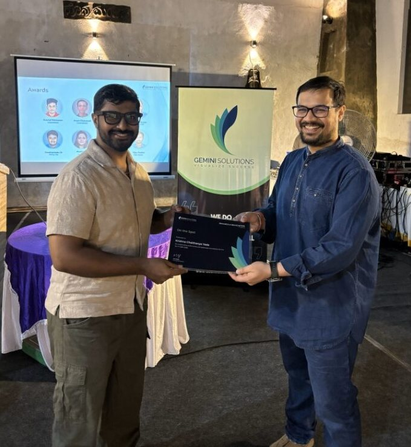

Krishna Chaithanya
I keep 4,000+ Linux and Windows servers patched, monitored and calm. Eight years in enterprise production, now looking for my next DevOps, SRE or cloud infrastructure role.
Bangalore, open to remote or hybrid
Scroll
quiet infrastructure
Most of my work is the kind nobody notices when it goes well: patching thousands of machines without an outage, owning incidents until they're actually closed, and turning repeat chores into Ansible and Terraform. I look after AWS and hybrid workloads and keep them monitored end to end.
- Platforms
- RHEL 7, 8 and 9, Ubuntu LTS, Windows Server, AWS, VMware vSphere
- Automation
- Ansible, Terraform, Jenkins, Docker, Kubernetes, Git
- Observability
- Dynatrace, AppDynamics, Prometheus, Grafana, Nexthink
- Scripting
- Bash, Python, PowerShell
4,000 servers
Each point in this grid stands for one server I look after: about 3,500 running RHEL and Ubuntu, and about 500 on Windows.
The lattice holds 4,096 points, sixteen on each side.
things I've built
- terraform-aws-infrastructure End-to-end AWS provisioning with Terraform: VPC, EC2, RDS, S3 and CloudFront. Terraform, AWS
- Serverless photo gallery Secure image upload and viewing on Cognito, Lambda, API Gateway, S3, DynamoDB and CloudFront. AWS serverless, Python
- DockerShield Scans Docker images for vulnerabilities, malware, secrets and misconfigurations before they ship. Python, Docker
- github-security-scanner Checks a GitHub profile for compromised npm and PyPI packages, leaked secrets and vulnerable dependencies. Python
- RDS blue/green deployment Zero-downtime database upgrades and migrations on AWS RDS. AWS RDS
- ECR DevSecOps pipeline Container build, image scanning and secure deployment with AWS ECR. AWS ECR, Docker
recognition

- Claude Certified Associate, FoundationsAugust 2026
- AWS Certified Solutions Architect, AssociateApril 2026
- AWS Certified Cloud PractitionerMarch 2026
say hello
I'm open to DevOps, SRE and cloud infrastructure roles, remote or hybrid in Bangalore.
Made with Three.js. Hosted on GitHub Pages.